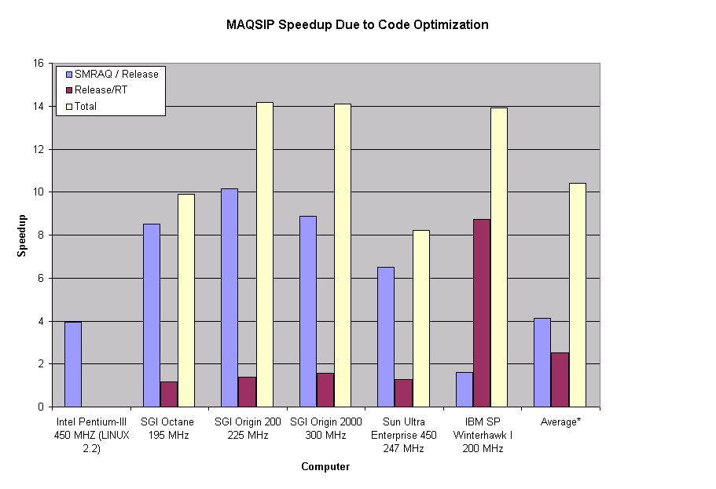
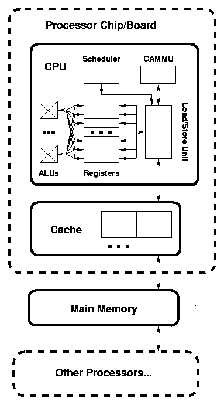
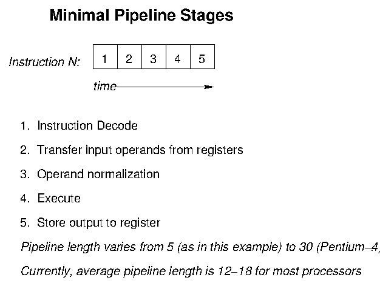
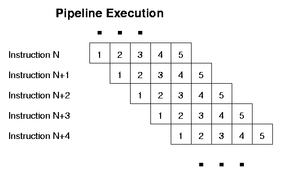
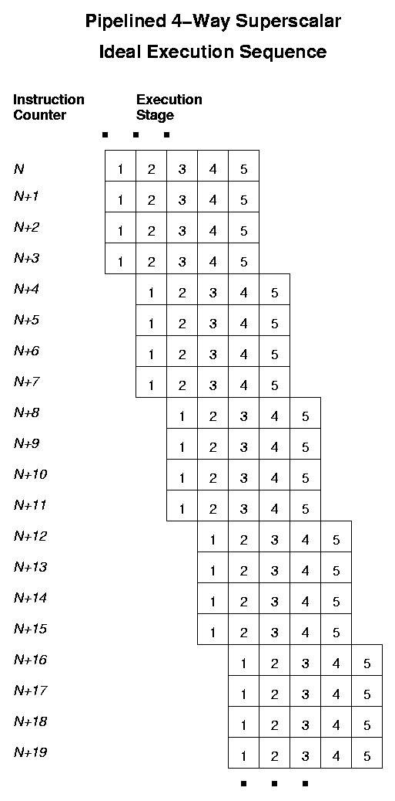
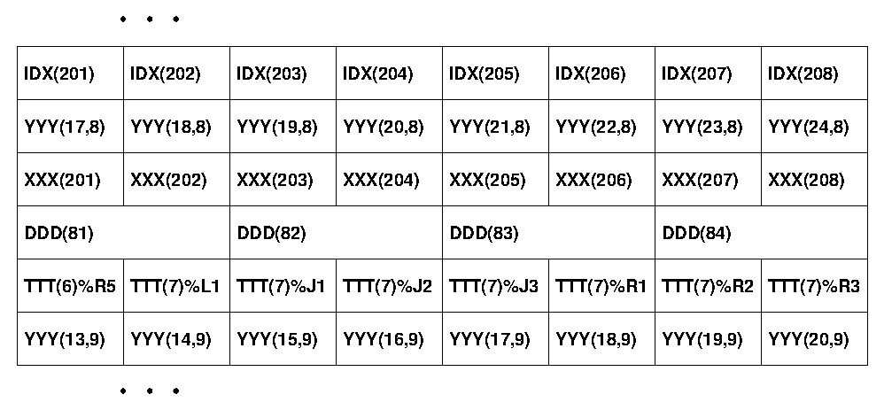
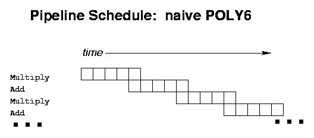
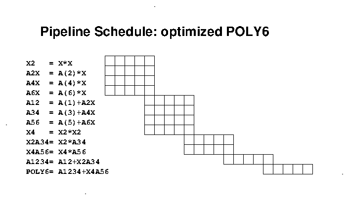
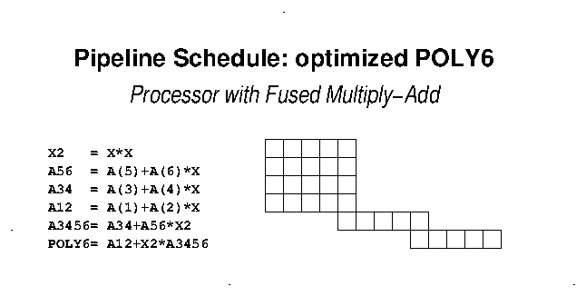
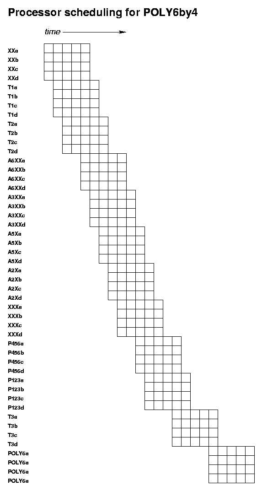

Note that there was an average net speedup factor of slightly greater than ten, due primarily to the code organization!. (With 2018-vintage processors, the speedup would be even more dramatic.)

In this paper we will first examine the hardware characteristics that promote or inhibit computational performance. In the remainder of the paper, we will first summarize the principles to use in writing high-performance code, then we will examine each of these principles and give examples. Throughout, there are three things we wish to watch for:
CHARACTER string operations,
mathematical functions) are very expensive.
To get thes enhanced instructions, you have to tell the compiler to use them (which means your executable won't run on earlier-generation processors).
NOTE: Over the last few years, people have started using the enormously powerful arithmetic capabilities developed for graphics cards to do modeling (so-called GPU Computing). We will not discuss GPU computing here; however, it is worth noting that it freequently requires a complete re-write of the model; moreover, its performance is hurt by many of the same issues as "normal" microprocessors—but hundreds of times worse!
perf.data; then perf report
generates the performance evaluation.
perf record $<program>
perf report >& <performance-report>
rm perf.data
...
# Samples: 41M of event 'cycles'
# Event count (approx.): 35265040908321
#
# Overhead Command Shared Object Symbol
# ........ ............... ...................... ..................................................................
#
18.85% CCTM.ftz.cksumm CCTM.ftz.cksummer-AVX2 [.] for_cpstr
15.19% CCTM.ftz.cksumm CCTM.ftz.cksummer-AVX2 [.] matrix_
10.12% CCTM.ftz.cksumm CCTM.ftz.cksummer-AVX2 [.] _intel_fast_memcmp
6.31% CCTM.ftz.cksumm CCTM.ftz.cksummer-AVX2 [.] phot_mod_mp_getcsqy_
5.68% CCTM.ftz.cksumm CCTM.ftz.cksummer-AVX2 [.] hrsolver_
2.73% CCTM.ftz.cksumm CCTM.ftz.cksummer-AVX2 [.] hrrates_
2.73% CCTM.ftz.cksumm CCTM.ftz.cksummer-AVX2 [.] getpar_
2.23% CCTM.ftz.cksumm CCTM.ftz.cksummer-AVX2 [.] hrprodloss_
2.20% CCTM.ftz.cksumm CCTM.ftz.cksummer-AVX2 [.] vdiff_
1.68% CCTM.ftz.cksumm CCTM.ftz.cksummer-AVX2 [.] hrg2_
1.59% CCTM.ftz.cksumm CCTM.ftz.cksummer-AVX2 [.] hrg1_
1.59% CCTM.ftz.cksumm CCTM.ftz.cksummer-AVX2 [.] zadv_
1.54% CCTM.ftz.cksumm CCTM.ftz.cksummer-AVX2 [.] convcld_acm_
1.34% CCTM.ftz.cksumm CCTM.ftz.cksummer-AVX2 [.] hppm_
1.11% CCTM.ftz.cksumm CCTM.ftz.cksummer-AVX2 [.] calcact4_
1.06% CCTM.ftz.cksumm CCTM.ftz.cksummer-AVX2 [.] for_trim
1.02% CCTM.ftz.cksumm CCTM.ftz.cksummer-AVX2 [.] hrcalcks_
0.95% CCTM.ftz.cksumm CCTM.ftz.cksummer-AVX2 [.] pow.L
0.91% CCTM.ftz.cksumm CCTM.ftz.cksummer-AVX2 [.] expf.L
...
Note that for_cpstr, _intel_fast_memcmp,
and for_trim are system run-time library routines used
for CHARACTER-string copies and comparisons. These
take up slightly more than 30% of the model's run time—and in
what is supposed to be a numerical model! This
points at an obvious way to obtain noticeable speedups...
Gas-phase chemistry (normally thought-of as the most expensive
process, and which uses hrsolver_, hrrates_,
hrg2_, hrg1_, and hrcalcks_)
takes up 14.93%, less than half as much as the
CHARACTER-string operations, and also less than
vertical diffusion (which uses vdiff_ and
matrix_, which total 17.39%).
The perf tool generates a report very easily, and with
very little overhead (using operating-system level support built
into the Linux kernel). It will give you information about calls to
system libraries (here, for_cpstr, _intel_fast_memcmp,
for_trim. pow.L, and expf.L). It also does not
require that you build a special executable to use it. However, it
does require a decently up-to-date Linux system (Kernel-version at
least 3: I haven't run a system myself with an older-version kernel
for a long time; however, killdevel and kure
are still running 2.6.x kernels and so cannot run
perf. ;-( ).
-pg to add in the profiling code to what you
have compiled (note that this of necessity ignores system
libraries). Since its activity happens in "user" mode, it
does have a sometimes-significant effect upon your results.
However, it is what you're stuck with (by and large) on UNC's
killdevel and kure, unless you use the
commercial (more detailed and harder-to-use) tool
valgrind, which is available there.
Using prof or valgrind is beyond the scope of today's talk.
Details vary considerably, but the essential characteristics are displayed. In particular, there are often separate sets of registers and separate sets of arithmetic units for integer/address values and for floating point values; there are sometimes separate caches for instructions and for data, the virtual-address/cache management unit may be placed in the cache instead of within the processor chip itself.

The system has the following parts (again, simplified for the purpose of our optimization/parallelization concerns):
- Arithmetic/Logic Units (ALU)
- These are the place that the actual computation is done. On current chips there are from 3 to 10 ALUs per chip. These units do one arithmetic, logic, or subscript operation per "cycle".
There may be several units, which can be executing different instructions at the same time (the processor is superscalar). Each of these ALUs is usually pipelined, i.e., instruction execution is split over several stages, and ideally the ALU tries to execute several instructions at the same time, one at each successive stage.. Typical current pipeline lengths range from 12 to 20, and typical superscalar "width" is from 4 to 8 units: note that this means that we may have dozens of instructions executing at the same time. This effect promises to get even larger with coming generations of processors.
When the dependencies between instructions prevent one instruction being started before a prior instruction is completed, the ALU must "stall" and insert a (no-operation) bubble into the pipeline.
 

Intel Processor Note: Successive generations of Intel processors introduce ever-more-powerful sets of available arithmetic operations (SSE, AVX, AVX2, ...). To take advantage of these, you need to include the right command-line options in your compile-commands. The easiest case for this is the "use the arithmetic operations for the processor I'm compiling this on". For Intel compilers, that is
-xHost; for GNU compilers, it is-march=native -mtune=native; for PGI compilers, it is the default behavior. If you're compiling on one machine but intending to run on a different one (or running on a mixed-processor cluster), it can get quite complicated :-)
- Load/Store Unit
- This unit "stages" the transfer of values between the registers and the cache and main memory subsystem. Note that load/store units frequently pipelined, just as ALU's are (but with their own pipelines, independent of the ALUs): typically, the load/store unit can start one load and one store per processor cycle; the length of its pipeline depends upon the details of cache performance, described below. (An exception to the "one load and one store" is the IBM POWER architecture, that can start 2 loads, 2 stores, and 4 floating point arithmetic operations per processor cycle).
Note that store-operations normally go "through the cache", using a pattern given below (so that store-operations are more expensive than loads):
Read the appropriate cache-line from main memory, if necessary
Modify the value in that cache-line
Write the cache line back to main memory
- Scheduler
- This unit is responsible for decoding the sequence of machine instructions, evaluating the dependencies among them (whether one instruction needs to complete before certain others can start), and scheduling their execution on the various ALUs and load/store units, on the basis of dependencies and data availability (both from previous instructions and from memory). In most cases, this is an out-of-order unit which even calculates dependencies between instructions and takes instructions out of order according to those dependencies. The scheduler may well "cache" the
branch taken/branch not takendecision at each program branch and use that information to decide how to proceed with speculative execution, where the scheduler attempts to start the most-likely upcomingIF-block body even before the associated decision is made. For code in which the scheduler is able to predict correctly, speculative out-of-order execution can remove the bulk of the run-time overhead associated with branches (e.g., loop-body start-up/take-down) although the instruction pipeline-setup, instruction dependency, and compiler scheduling problems are still made much more complicated in "branchy" code.For current processors, the scheduler manages up to 50-100 "active"instructions selected from a pool of 100-200 "available" instructions, on the basis of the data dependencies among them.
- Registers
- these are very fast memory locations that hold a single number each; on modern microprocessors, ALUs get their input values from registers and store their results back to registers. Frequently, there are distinct sets of registers for integer/address data and for floating-point data. Typically, there are 16-32 registers of each type. Intel x86's are "register-starved", having only 4 integer registers and 8 floating point registers; x86_64 increased those numbers to 16. Computations that "live in registers" tend to be much faster than those that don't.
- Cache
- Cache is one or more small banks of fast memory that mirrors the contents of portions of main memory but that is much faster. Caches try to take advantage of spatial locality, where nearby array elements are expected to be accessed within programs at about the same time, and temporal locality, where program accesses to a particular variable are expected to occur near each other in a program's execution.
Caches are organized in terms of cache lines of several consecutive memory locations that are managed together (it being more efficient to do a "read several consecutive numbers" memory operation than to do the same number of singleton memory-reads; "in the same cache line" is then the relevant notion of spatial locality above). Cache lines typically hold from 4 to 16 numbers each. Note that since main memory is much larger than cache size, there will be many memory addresses (generally multiples of a large power of 2 apart) that map to the same cache location, leading to potentially performance-inhibiting cache conflicts when programs are accessing multiple arrays that map to the same cache line.
Note also that caches are read and written a full cache-line at a time, so that read or write operations that affect only one entry in that line encounter substantial extra overhead (a write-operation has to do the following (expensive!) sequence:
- Read the entire cache-line from memory, if necessary;
- Modify the relevant cache-entry;
- Write the entire cache-line back to memory (possibly at a later time, before re-using that cache-line for something else).
The typical organization is hierarchical, with a level-1 cache holding 8-32 KB of the most-recently-used variables, and requiring 2-5 processor cycles to access, a level-2 cache of 256 KB to 1 MB holding the next-most-recently used variables, and requiring 8-20 processor cycles to access, and a larger level-3 cache holding more variables, and requiring 18-40 processor cycles.
See Case Study 1: Typical Cache Behavior.2015 NOTE: For most current Intel x86 processors, there are actually 4-18 processor-coress ("cores") per circuit-board socket; each of these has its own 16-32KB L1 cache and 256KB L2 cache; all the processor-cores on a socket share an additional L3 cache with 1-2MB per processor—a typical 4-core desktop processor having 4-8MB of shared L3 cache, and a 16-core server processor having 24-32MB of shared L3 cache, for example.
- Cache/Address/Memory Management Unit (CAMMU) a.k.a. Translation Lookaside Buffer (TLB)
- This unit is responsible for translation between virtual addresses that give the program's view of memory and the physical addresses that give the actual (RAM) hardware layout of main memory. It is also responsible for determining which parts of memory are duplicated in the caches, and in multi-processor systems for ensuring that all processors see the same view of memory. There are tables (page tables) that translate between the two kinds of addresses, and usually an on-chip subset (the translation lookaside buffer or TLB) of the currently-active parts of the page tables. For current processors, typical TLB coverage on-chip is 4 MB.
If your program jumps randomly through much larger regions of memory ("TLB thrashing") , it will have to make frequent and very-expensive operating-system calls to re-load the TLB.
- Main memory
- Main memory is currently much slower than the CPU, requiring typically 50-200 processor cycles to access (depending upon the processor). One of the reasons Cray vector machines have been so fast is that they used exclusively very-fast SRAM instead of DRAM -- 20 times as fast, 50 times as power-hungry, and 100 times as expensive...
- Other Processors
- There are various ways in which multiple processors connect to memory. Sometimes each circuit board holds a processor and some of the memory; in which case on-this-board memory may be faster than memory on some other processor's board (though both are "visible"); such a system is called a Non-Uniform Memory Access (NUMA) system. SGI ALTIX machines and IBM'x X-series are prime examples of NUMA systems (with the additional property of cache coherence). One of the things that it is necessary to ensure is that all the processors see the "same" view of memory-- that when one processor updates a variable, the rest of the processors see that updated value.)
Note that GPU Programming is an example of this, using the processors on a system's graphics card to do very fast calculations that have a linear algebra style (note that the graphics-card processors are terrible at logic-operations).
A(I,J,K),
A(I+1,J,K), ... are processed consecutively.
Because of cache conflicts, it is sometimes worthwhile to
ensure that array sizes are not divisible by large powers
of two.
CHARACTER string
operations typically cost 30 to 100 times as long to
execute as to adds and multiplies (even more for
CHARACTER operations on longer strings).
Exponentials, logarithms, real-exponent powers, and trig
functions likewise are very expensive—1000 times as
much (or more!) as simpler operations. In particular,
real-exponent powers are much more expensive than square
roots.
Currently, Intel Xeon server processors tend to have the following range of characteristics. See https://en.wikipedia.org/wiki/Xeon for details.
| Cores per socket | 4-18 |
| L1 Cache | per core: 16-32KB
instruction/16-32KB data, 8-way associative |
| L2 Cache | per core: 256KB, 8-way associative |
| L3 Cache | shared by all cores on this socket: <number of cores> times 1-2.5 MB, 8-20-way associative |
| TLB Coverage | per core: 4 MB |
| Pipeline length | 14-19 stages (instruction-dependent) |
Summary: The two most important factors in getting (even a fraction of) the potential performance out of modern processors are:...as described in the next section...
- Memory system behavior: taking as much advantage of cache as possible; and
- Pipeline behavior: keeping the pipelines as full as possible: put the computational work in large "chunks"
When the input of one instruction is the output of a previous instruction, we say that we have an instruction (or data) dependency. Data dependencies limit how many instructions can be executing at any one time, and may severely inhibit performance. The following are examples of programming patterns that cause instruction dependencies:
X = Y(INDX(I))
INDX(I) must be loaded
from memory (a process that costs from
2 to hundreds of processor cycles depending
upon whether the index is currently in cache
or not) in order for the processor to know
just which Y-value to
load—and only then loading that
Y-value.
When the processor loads a value from main memory, it always loads an entire cache line at a time into the cache—typically, 4-8 numbers. Ideally, the program should be structured to use all of these numbers before needing to load more.
Arrays:
Memory is best accessed consecutively
("stride-1"). For Fortran arrays,
consecutive locations have left-most consecutive
subscripts; for C, it is instead right-most consecutive
subscripts that give adjacent memory locations. Since
"store" operations actually work by reading an
entire cache line, modifying the entry that is the target
of the store, and then writing back the entire cache
line, nonconsecutive stores create more memory traffic than
nonconsecutive loads. Note that indirect addressing
(as indicated above) frequently leads to nonconsecutive
memory accesses.
The table below indicates how loop nest order and array subscripts should interact for Fortran and for C:
| Language | Fortran | C |
| Array Declaration |
REAL A(M,N,P)
|
float a[p][n][m]
|
| Fastest subscript |
M
|
m
|
| Good loop order |
DO K = 1, P
|
for ( k=0; k<p; k++ )
|
In the very simple cases like the above (with its perfect
loop-nests), some compilers will at high optimization
levels invert the ordering of badly-ordered loops into
correct form (turning, for example,
DO I...DO J...DO K loop
ordering into the
DO K...DO J...DO I given
above. In the real world, however, we are apt to
encounter complex nest systems like the following, which
the compilers can not deal with as effectively,
if the loops are not coded in the correct order:
DO K = 1, P
DO I = 1, M
C(I)=...
END DO
DO J = 1, N
DO I = 1, M
B(I,J,K)=...
END DO
END DO
DO J = 1, N
DO I = 1, M
A(I,J,K)=...
END DO
END DO
END DO
Sometimes (as with matrix transposes) it is necessary to have both "good" and "bad" subscript and loop nest orders at the same time. In that case, it is the store operation (left hand side of the equals sign) that is most important, since a store operation involves reading an entire cache line, fixing the indicated single array element, and subsequently writing the cache like back out to main memory:
| Good | Bad |
REAL A(M,N), B(N,M)
|
REAL A(M,N), B(N,M)
|
structs (C) and TYPEs
(Fortran):
Adjacent struct-fields will be adjacent in
memory. There are two potential problems here:
structs, algorithms
that access non-adjacent fields do a lot of extra
memory traffic (because of the cache-line effect,
above).
COMMONs...
Consider the following example taken from a C-language hydrology model:
struct patch_object
{
int zone_ID;
int default_flag;
int ID;
int num_base_stations;
int num_innundation_depths;
int num_canopy_strata;
int num_layers;
int num_soil_intervals;
double x;
double y;
double z;
double dx;
double dy;
double area;
double area_inv;
double acc_year_trans;
double base_flow;
double cap_rise;
double tempC;
... [more than 300 fields, occupying about 3.2KBytes]
} my_patch ;
struct basin_object
{
int patch_count;
...
struct patch_object *patches ; /* allocated as patches[patch_count] */
...
} my_basin ;
Note that in this case, my_patch.x is
adjacent in memory to
my_patch.num_soil_intervals and
my_patch.y, and is 8 ints,
i.e., 32 bytes from the start of my_patch.
If there had only been 7 int-fields,
its offset would have been 28 bytes, which is not
a multiple of sizeof(my_patch.x)==8
and would have been more expensive to use.
Suppose that my_basin has
patch_count=10,000 (for a 100×100-patch
basin), and you want to compute the average temperature
tempC: The relevant patches are scattered
over about 32 MB of main memory (far larger than any
processor's cache, and also far larger than the virtual
memory system's TLB tables). You will have to get 10,000
isolated temperature-values scattered throughout that
32 MB—and do so not only at slow main-memory
speeds, but also with substantial extra memory-management
overhead.
NOTE: From Day 1, Paragraph 1 of the notes for
nVidia's GPU-programming course:
Many programs can be organized either in
array-of-
The same effect is true for large model-problems on
"normal" microprocessors, though to a lesser
degree (factor of "only" 10-100).
See Note 1.
structs form or in
struct-of-arrays form. Use the latter; the
former will absolutely kill GPU-programming
performance, by a factor of 10,000 or more.
If you must have an array-of-structs model
architecture, then try to ensure that fields that are
used together are located together in the list of fields
(as X,Y,Z are above). If you want to go to
heroic efforts, ensure that each struct-size is a multiple
of 256 bytes, that the array-of-structs is allocated to
start on a 256-byte boundary, and that related variables
lie within either the same or consecutive 256-byte chuncks
relative to the start-of-struct (256 being the usual cache
block size).
In one of the most extreme examples of
("bench-marketing") compiler-optimization
activity: in 2007, Sun introduced a new compiler which
"broke" one of the SPEC benchmarks: with the
right compile flags, and if you compiled the entire
program as one single operation, the compiler would spend
three days turning this particular
array-of-structs program into a
machine-language struct-of-arrays executable
program, which was more than ten times faster than anyone
else's executable program for that benchmark. Sadly,
their compiler couldn't do this for most such programs.
Generally, modern processor can only perform one or two loads and one store per processor cycle, while (if the code is stride-1) it can do as many as four floating point and four integer arithmetic operations per cycle. Codes that do more than one array operation per arithmetic operation are limited by the problem of loading data into the processor; the processor itself cannot operate at full efficiency. For example, in the pair of loops:
DO I = 1, N
A(I,K,J)=B(I,K,J)+C(I,K,J)
END DO
DO I = 1, N
A(I,K,J)=A(I,K,J)*PSA(I,J)
END DO
4 N loads,
N adds, N multiplies, and
2 N stores. The performance is limited
by the number of loads and stores, and half of the time
only a load can be performed on a given processor cycle
(the other half of the time, the processor does a
subscript-to-address calculation, a load, and an
arithmetic operation. If this code were restructured
DO I = 1, N
A(I,K)=(B(I,K)+C(I,K))*PSA(I)
END DO
3 N loads, but
N adds, N multiplies, and
N stores. The code is still memory-limited
(all the arithmetic can be performed simultaneously with
just a fraction of the load operations), but the
re-structured code should run in two-thirds of the
time (or if we're dealing with 3-D nests of loops and
large arrays as in WRF advection, less than half the time;
see "Cache Pollution" below).
Modern processors can typically sustain one floating point
add and/or multiply per ALU per processor cycle (if not
hindered by memory-accesses or instruction dependencies).
Divides and square roots are more
expensive, typically ranging from 20 to 60 cycles per
operation. Character-string operations
are also orders of magnitude expensive (and depend on
string length). Log, exponential, trig
functions, and real-exponent powers and
more expensive yet—as much as 1000 times as
expensive. For processors that have double-precision-only
floating point hardware (Intel x86/8087 and IBM POWER series),
the expensive floating point operations are much
more expensive.
NOTE: Real-exponent powers X**Y are usually
handled behind the scenes in terms of logs and
exponentials, e.g., exp(Y*log(X)).
Further note that repeated function calls with the same
arguments must all be evaluated individually: you might
very well have replaced the system-version with your own,
which might have side-effects (like counting the number
of calls...). For example, the following code from WRF's
dyn_em/module_diffusion_em.F (at lines
1444:1445 for WRF-3.4.1) is
stupid because it mandates four expensive
calls to exactly the same cos(degrad90*tmp):
the compiler cannot know whether cos() is the
usual system-library trig-function, or whether you've
replaced it with something of your own, that needs
to be called all four times.
...
dampk(i,k,j) =cos(degrad90*tmp)*cos(degrad90*tmp)*kmmax*dampcoef
dampkv(i,k,j)=cos(degrad90*tmp)*cos(degrad90*tmp)*kmmvmax*dampcoef
Better would be the following, which makes only one call
to this expensive routine, and is therefore almost four
times faster:
...
SCR1 = cos(degrad90*tmp)**2 * dampcoef
dampk(i,k,j) =SCR1*kmmax
dampkv(i,k,j)=SCR1*kmmvmax
Better yet in this case would have been to notice that
this COS() calculation happens inside a
K-I loop nest but depends only upon I, hence
should be calculated in a preliminary I-only
loop and stored in an I-subscripted scratch
array (an example of the "loop-invariant
lifting" described later).
In Fortran, good compilers should optimize products of
real-exponent powers (which are "built-in" to
the Fortran language as arithmetic operations): good
compilers will turn X**A * Y**B
into exp(A*log(X) + B*log(Y).
In case a real exponent is a compile-time-constant
(explicit constant or PARAMETER)
machine-exact one-half or one-third, some compilers can
detect this special case and replace normal real-exponent
processing by optimized special cases (e.g., using
Halley's
fast cube-root algorithm).
In C or C++, the compiler cannot do these optimizations,
since in those languages the operation uses
library-functions (which may be overriden by the user)
instead of operations built into the language.
A basic block is the set of straight-line
machine-language instructions between machine-language
GOTO's—which happen "behind the
scenes" for IF-blocks,
DO-loops, and subroutine/function calls.
Basic blocks are the units over which compilers do
instruction scheduling. If basic blocks are short, they
will not have enough independent work to keep a pipelined
superscalar processor working efficiently.
Consider a typical air quality modeling grid: if it is
100×100×25, then each 3-D
variable (wind component, temperature, pressure, or one
chemical species) on the grid occupies one megabyte. One
3-D loop nest that uses two variables completely fills up
a typical cache, wiping out whatever had been there
previously. For multiple-variable calculations, bad
program organization can cause the cache to be entirely
filled with one or two variables, filled again by other
variables, and then again filled by uses of the first
variables. For this code-organization, cache values are
never re-used, forcing the program to work at much slower
main-memory speeds.
An example of this is given in the MM5 Version 3
treatment of a number of processes, of which horizontal
advection is but one example. Suppose your met model grid
is 100×100×25, so that (assuming
4-byte REALs), each 3-D variable occupies
1 megabyte. For a typical set of physics options
(IMPHYS=5: ice but no graupel), the vanilla
MM5v3 has the following set of horizontal advection calls
(where I've simplified things to emphasize the nature of
the calls):
CALL HADV(..., U3DTEN, UA,VA, U3D,...)
CALL HADV(..., V3DTEN, UA,VA, V3D,...)
CALL HADV(..., PP3DTEN,UA,VA,PP3D,...)
CALL HADV(..., W3DTEN, UA,VA, W3D,...)
CALL HADV(..., T3DTEN, UA,VA, T3D,...)
CALL HADV(..., QV3DTEN,UA,VA,QV3D,...)
CALL HADV(..., QC3DTEN,UA,VA,QC3D,...)
CALL HADV(..., QR3DTEN,UA,VA,QC3D,...)
CALL HADV(..., QI3DTEN,UA,VA,QI3D,...)
CALL HADV(...,QNI3DTEN,UA,VA,QNI3D,...)
HADV call calculates a 3-D
*TEN tendency array in terms of 3D winds
UA,VA and the original 3D variable
*3D being advected. HADV does
over 4 MB of memory traffic per call. Assuming a
processor with a (large) 2 MB L3 cache,
each HADV call wipes out the cache twice
over. This means that the winds UA,VA never
get a chance to be re-used in the cache. With 10 calls,
there is a total of 40 MB of memory traffic. Even on
a similar 32-processor system (with 64 MB total of
caches), this code overwhelms the caches. Suppose we
jammed these subroutine calls by coding a new advection
routine that advects all these variables as a single
operation:
HADVALL( UA, VA,
& U3DTEN, U3D, V3DTEN, V3D,
& PP3DTEN,PP3D,W3DTEN, W3D,
& T3DTEN, T3D, QV3DTEN,QV3D,
& QC3DTEN,QC3D,QR3DTEN,QR3D,
& QI3DTEN,QI3D,QNI3DTEN,QNI3D)
UA(I,J,K),VA(I,J,K) to
calculate the tendencies *TEN simultaneously
for all ten of the *3D variables, at each
(I,J,K). (It also has one parallel section
instead of 20, reducing MM5v3 parallel overhead by about
10%, thereby improving model performance on many-processor
systems.) On our hypothetical 32-processor system, we've
only used one-third of the caches, leaving 40 MB of
total cache untouched, perhaps holding data useful for the
surrounding routines.
NOTE: because this re-structuring reduces the memory bottleneck of the original code, it is even more effective at improving performance on newer processors with more powerful arithmetic instructions.
Recall that the TLB is the part of the processor that has the currently active part of the page tables that translate between the logical addresses that programs use, and the physical addresses of the actual RAM. Since the TLB is much smaller than the entire page table (typically covering 4 MB per processor), when the TLB doesn't have the needed translation, the entire processor must be suspended while the operating system causes the TLB goes out to main memory to fetch the relevant part of the page table for that translation. Programs that traverse large regions of memory over and over again may suffer frequent stalls from this process. The MM5v3 example above (with a dozen or so processes that go over and over large regions of memory) is also prone to TLB thrashing. For most Intel Xeons, the size of the TLB coverage is 4 MB per processor; bad loop and array organization can cause extra flushing and reloading of the TLB from (slow) main memory.
In the above MM5 example, each HADV(() call
would exhaust the TLB capacity; subsequent calls would
have to flush the TLB and start over (ten times). The
HADVALL() code would only need four TLB flushes.
The MM5 practice of over-dimensioning the model in order to accomodate the largest nest that might occur also contributes to this effect. Consider a 45KM/15KM nest system with 45KM grid dimensions 96×132×31, and 15KM grid dimensions 190×184×31. Benchmarking shows that a 45KM-only run built with this 190×184×31 dimensioning is 15-25% slower (depending upon vendor/platform) than a run with "exact" 96×132×31 dimensioning. 1-3% of this difference is due to decreases in cache efficiency; the remainder is due to extra TLB thrashing activity.
Compilers analyze the data flow within programs to decide which code optimizations and transformations are applicable. One such transformation is not to store a result from register to memory when the compiler can prove the value will not be used subsequently (dead-store elimination). Such analysis is much easier for scalars than it is for arrays (for which the compiler often can only prove whether any element of the array will be used later). (Many older codes unnecessarily use arrays for storing intermediate results; this comes from the fact that the very earliest Cray vector compilers could not otherwise recognize vectorizable loops, a deficiency that Cray fixed over twenty-five years ago.)
An example shows up with the original QSSA solver used
in the Models-3 and EDSS AQMs: there was a routine
RATED that calculated an array
D(NRXNS) entry by entry, like the following:
...
D(51) = RK(51) * C(10) * C(36)
...
...
P1(15) = (D(37) + D(38) + D(39) + D(40) + D(41))/C(15)
...
Q1(20) = 0.760 *D(52) + 0.020 *D(53)
...
D(N) are always written to
memory and read from memory.
For MAQSIP-RT, we combined these two routines and replaced
the array D(NRXNS) by the set of scalars
D01, ..., D91 (for Carbon-Bond
IV). The compiler was then able to deduce exactly how
and when each of the Ds was used, and
rearrange all the arithmetic so that on an SGI R10000
with 32 floating point registers, about 70 of the
Ds live entirely in registers (never being
stored to nor retrieved from memory). Moreover, the code
of the combined RATEDPQ1 is one huge basic
block, enhancing the compiler's ability to determine
which computations were independent, and to schedule the
machine instructions for the routine. The result of this
modification was to speed up the air quality model as a
whole by better than 50% (SGI R10000 result).
There are three sub-categories of these overheads:
!$OMP PARALLEL DO
!$OMP& DEFAULT(NONE)
!$OMP& PRIVATE(I)
!$OMP& SHARED(A,B,C)
DO I=1,38
A(I)=B(I)/C(I)**2
END DO
10% of the time spent on this loop, P3 and P4 have finished while P1 and P2 are still busy. We are effectively wasting 5% of the machine, on the average. There are obvious examples that are much worse, where the amount of work per iteration varies substantially. For example, parallel loop:
- P1 gets
I= 1,10: 10 iterations- P2 gets
I=11,20: 10 iterations- P3 gets
I=21,29: 9 iterations- P4 gets
I=30,38: 9 iterations- All the processors synchronize at the end of the loop.
!$OMP PARALLEL DO
!$OMP& DEFAULT(NONE)
!$OMP& PRIVATE(I)
!$OMP& SHARED(A,B,C)
DO I=1,38
DO J = 1, I**2
<something>
END DO
END DO
GUIDED,
DYNAMIC, or CHUNKSIZE=1
scheduling options can help somewhat to alleviate
the problem for this last
case.
Note that there is some overhead from compiling a program for parallel and then running on one processor, as compared with compiling serially (uniprocessor) to begin with. There are two reasons for this: first, the parallel sections are usually implemented as subroutine calls, and there is some extra subroutine-call overhead for the parallel-compiled code; secondly, compilers usually cannot optimize across subroutine calls, and the extra subroutine calls created by the parallel compile may prevent some optimizations. Usually, these effects are small -- in the 1-2% range.
There are a number of unusual (even counter-intuitive) effects that can happen with both distributed and shared-memory parallel execution, especially in the presence of non-stride-1 array accesses and small parallel sections. A full study of these is beyond the scope of this paper.
Note that a good example of algorithm-improvement is the replacement of repeated linear search of unsorted data by binary search of sorted data. The Models-3 I/O API contains extensive sets of efficient routines for sorting and searching It also contains extensive facilities for using sparse or band matrices for bilinear interpolation, grid-to-grid transforms and the like (usually a massive win over the compute-coefficients-on-the-fly philosophy).
For linear algebra operations (solving systems of equations, matrix inversion, and the like), libraries like LAPACK are often far more optimized by their specialist authors than anything the average modeler can possibly code (e.g., by such tricks as cache blocking, described below), and typically outperform simpler alternatives by a factor of 2-4.
Likewise, avoid "array-of-struct/TYPE"
program organizations, because they will frequently have
you processing isolated numbers spaced apart by the size of
the struct. See
Note 1.
At a higher level, this is the reason for the original
Models-3 distinction between "computational
SPECIES,LEVEL,COL,ROW subscript order and
postprocessing or I/O (file/visualization)
COL,ROW,LEVEL,SPECIES subscript order:
all the processes in an air quality model act
upon the species at a cell, so that subscript is
naturally innermost. The second most used dimension is
the vertical, for the computationally more intense
processes of vertical diffusion, clouds and aqueous
processes, and (for photolysis calculations)
chemistry. The only processes for which
LEVEL is not naturally the
second-innermost subscript is horizontal advection (and
horizontal diffusion, if used: at AQM grid scales, the
existing numerical diffusion is generally an order of
magnitude larger than the "real" physical horizontal
diffusion anyway). On the other hand, post-processing
analysis and visualization most frequently are one
species (or a few species) at a time, and frequently for
one layer at a time, so that for post-processing purposes
these are naturally the outermost subscripts.
That is why in the original design, the air quality model
used one computational subscript order, but had an
OUTCOUPLE module that transposed the data to
analysis order for output, but was called infrequently
(as compared with the computational routines).
A( IX( I ) ) by its
nature introduces data dependencies that slow down
pipelined microprocessors. The processor must first go
to memory to fetch IX( I ) before
it can even know what element of A to
fetch. There are times, for example in SMOKE, for which
the use of index arrays and sparse matrix algorithms
allows one to avoid computations that are 99.99%
arithmetic with zeros, and even a factor of 10 slowdown
of the processor due to the index arrays leaves one a
factor of 1000 ahead in overall performance. On the other
hand, the use of indexing arrays repeatedly to go back and
forth between "physics species" and
"model species" costs a substantial fraction of
the time required by the horizontal and vertical
advection routines. The post-July2001 MAQSIP-RT's
3-D advection routine that performs more computational
work but does only one gather-scatter step, based on the
fact that most of the time, Z-advection is what limits
the model time-step.
ADV3D:
Extract advected species from CGRID, with
inverse-density related mass-adjustment
Half-step of Z advection
Full-step of X-Y advection
Half-step of Z advection
Copy-back advected species to CGRID, with
density related mass-adjustment.
ADJ_CON:
Extract advected species from CGRID
Perform inverse-density-related mass adjustments
Copy-back advected species to CGRID
HADV:
Extract advected species from CGRID
Full-step of X-Y advection
Copy-back advected species to CGRID
VADV:
Extract advected species from CGRID
Full-step of Z advection
Copy-back advected species to CGRID
ADJ_INV:
Extract advected species from CGRID
Perform density-related mass adjustments
Copy-back advected species to CGRID
It is worthwhile, I think, to consider structuring AQMs
so that the physics modules only see the physics species
and physics subscripts, possibly by making the
COUPLE/DECOUPLE operations not only go back
and forth between chemistry and physics units but also
between chemistry and physics species variable-sets and
subscripts.
Question: Should the very-short-lived
species have any existence at all outside the chemistry
module?
PARAMETERs where possible;
avoid constructs that require run-time disambiguation:
PARAMETER dimensions
and loop bounds typically cause speedups on the order of
5% (not a lot, but every little bit helps:-) Array
sections and ALLOCATEable
arrays cause performance penalties typically running from
10% to 100%, depending upon the vendor; Fortran
POINTERs typically cause 50%-200% penalties
(basically reducing the optimizability of Fortran down to
that of C/C++).
SQRT(X) is faster than
X**0.5 on all platforms I know; usually,
SQRT(SQRT(X)) is faster than
X**0.25. Here are just a few egregious
examples of avoidable expensive operations, taken mostly
from MM5:
CHI=XLV*XLV*QMEAN/CP/RV/TMEAN/TMEAN
CHI=XLV*XLV*QMEAN/(CP*RV*TMEAN*TMEAN)
CHI is only a scratch variable,
used as a factor in the 4-divide computation
of RI at the next line. The whole
CHI-RI computation could have been
rationalized to use only 1 divide, instead of 8!
PHIH(I)=(1.-APHI16*HOL1)**(-1./2.)
PHIH(I)=1.0/SQRT(1.-APHI16*HOL1))
K-loop
inside an I-loop in MM5's
EXMOISR,
DO N=1, NSTEPS
DO K=1, NL
...
FR(K)=AMAX1(FR(K)/DSIGMA(K),FR(K-1)/DSIGMA(K-1))*DSIGMA(K)
FS(K)=AMAX1(FS(K)/DSIGMA(K),FS(K-1)/DSIGMA(K-1))*DSIGMA(K)
FI(K)=AMAX1(FI(K)/DSIGMA(K),FI(K-1)/DSIGMA(K-1))*DSIGMA(K)
...
END DO
END DO
K-only
computation before the I-loop,
followed by the I-K-miter loop nest
containing
DO K=1, NL
SIGFRC(K)=DSIGMA(K)/DSIGMA(K-1)
END DO
DO N=1, NSTEPS
DO K=1, NL
...
FR(K)=AMAX1(FR(K),FR(K-1)*SIGFRC(K))
FS(K)=AMAX1(FS(K),FS(K-1)*SIGFSC(K))
FI(K)=AMAX1(FI(K),FI(K-1)*SIGFIC(K))
...
END DO
END DO
SIGFRC(K)
in a preliminary K-loop is an
example of indirect loop-invariant lifting,
described below.
Note that the alternative coding also causes less
round-off error!
PMLTEV(I,K)=SONV(I,K)*cache*(QAOUT(I,K)/QVS(I,K)-1.)*
& (0.65*SLOS(I,K)*SLOS(I,K)
& +DEPS2**0.5*DEPS3*DUM11(I,K)*SLOS(I,K)**DEPS4)
& /AB(I,K)SQRT() instead of real-exponent
power operation ()**.5:
PMLTEV(I,K)=SONV(I,K)*cache*(QAOUT(I,K)-QVS(I,K))*
& (0.65*SLOS(I,K)*SLOS(I,K)
& +SQRT(DEPS2)*DEPS3*DUM11(I,K)*SLOS(I,K)**DEPS4)
& /(QVS(I,K)*AB(I,K))
NOTE: Some compilers (notably SGI and IBM) try to deal with this automatically at high optimization levels. Sometimes they do a good job, sometimes not. And sometimes the result is not predictable in advance ;-(WARNING: SGI Rxxxx and IBM POWER<n> processors have additional "streaming load/store units" that are substantially faster for array accesses than the normal load/store units--but for only one (SGI) or two (IBM) arrays per loop. For these processors, it sometimes improves performance to take the opposite tack, and split the code into simple loops instead. Unfortunately, machine-specific experimentation is usually necessary to decide whether or not to do this ;-(
Sometimes loop jamming is very simple, as in the following example adapted from MM5's BDYVAL routine:
DO I = 1, N
QCX(I)=QC(I,2,K)*RPSA(I,2)
QRX(I)=QR(I,2,K)*RPSA(I,2)
END DO
DO I = 1, N
QC(I,1,K)=QCX(I)*PSA(I,1)
QR(I,1,K)=QRX(I)*PSA(I,1)
END DO
8×N loads and
4×N multiplies and stores. Speed is
limited by the fact that the processor can only do one
load per processor cycle; the arithmetic unit is operating
at only half-speed.
Simple loop
jamming then gives
DO I = 1, N
QCX(I)=QC(I,2,K)*RPSA(I,2)
QRX(I)=QR(I,2,K)*RPSA(I,2)
QC(I,1,K)=QCX(I)*PSA(I,1)
QR(I,1,K)=QRX(I)*PSA(I,1)
END DO
6×N loads and
4×N multiplies and stores, for
a speedup factor of 33%. This code can be further
reorganized (since in this case QCX and
QRX are purely scratch variables, never
used afterwards) to:
DO I = 1, N
QC(I,1,K)=QC(I,2,K)*RPSA(I,2)*PSA(I,1)
QR(I,1,K)=QR(I,2,K)*RPSA(I,2)*PSA(I,1)
END DO
4×N loads,
3×N multiplies (since the compiler
should recognize the common subexpression
RPSA(I,2)*PSA(I,1)), and
2×N stores. It should be at least
twice as fast as the original (maybe more, since
eliminating the scratch-arrays reduces cache
pollution).
At other times, we may jam nests of loops, and/or the
loop bounds may not match exactly, so that we have to
introduce extra "set-up" or
"clean-up" loops (an operation called
peeling) to make the merger work, as in
this example adapted from MM5's MRFPBL routine
(using DO-END DO and Fortran-90 style
continuations, for easier web layout). Recall that in
MM5, K=1 is the top of the model.
DO I = IST, IEN ! original loop 90
ZQ(I,KL+1)=0.
END DO
DO K = KL, 1, -1 ! original loop 110
DO I = IST, IEN ! original loop 100
DUM1(I)=ZQ(I,K+1)
END DO
DO I = IST, IEN ! original loop 110
CELL=PTOP*RPSB(I,J)
ZQ(I,K)=ROVG*T0(I,J,K)*&
ALOG((SIGMA(K+1)+CELL)/(SIGMA(K)+CELL))&
+DUM1(I)
END DO
END DO
DO K = 1, KL ! original loop 120
DO I = IST, IEN
ZA(I,K)=0.5*(ZQ(I,K)+ZQ(I,K+1))
DZQ(I,K)=ZQ(I,K)-ZQ(I,K+1)
END DO
END DO
DO K = 1, KL-1 ! original loop 130
DO I = IST, IEN
DZA(I,K)=ZA(I,K)-ZA(I,K+1)
END DO
END DO
I-loop
for K-value KL+1.
All the I-loops have range I=IST,IEN
but we must re-arrange a bit of code to get a common range
of KL-1,1,-1 for the K-loops--we
need to put computations for K-value
KL into the "start-up"I-loop
to make this work. It is also best to promote CELL
to being an array, and eliminate scratch variable
DUM1. We also need to make sure we
"count down" in K, because of the
dependencies of, for example, DZA(I,K) upon
ZA(I,K+1). The result is:
DO I = IST, IEN
ZQ(I,KL+1)=0.
CELL(I)=PTOP*RPSB(I,J)
ZQ(I,KL)=ROVG*T0(I,J,KL)* &
ALOG((SIGMA(2)+CELL(I))/(SIGMA(1)+CELL(I)))
ZA(I,KL)=0.5*(ZQ(I,KL)+ZQ(I,KL+1))
DZQ(I,KL)=ZQ(I,KL)
END DO
DO K = KL-1, 1, -1
DO I = IST, IEN
ZQ(I,K)=ROVG*T0(I,J,K)* &
ALOG((SIGMA(K+1)+CELL(I))/(SIGMA( K ) &
+CELL(I)))
ZA(I,K)=0.5*(ZQ(I,K)+ZQ(I,K+1))
DZQ(I,K)=ZQ(I,K)-ZQ(I,K+1)
DZA(I,K)=ZA(I,K)-ZA(I,K+1)
END DO
END DO
SIZE=KL*(IEN-IST+1)
In the original, there are about 8*SIZE loads,
5*SIZE stores, 9*SIZE adds or
multiplies, and one set each of SIZE very
expensive log and divide operations. (Loop 120 manages to
re-use the values for ZQ(I,K) and
ZQ(I,K+1), reducing the number of loads from
10*SIZE to 8*SIZE.) In the
jammed final form, the re-use is even better:
ZQ(I,K) is calculated then simultaneously
stored and re-used in two additional calculations, for
example. There are about 3*SIZE loads,
4*SIZE stores, 9*SIZE adds or
multiplies, and one set each of the expensive log and
divide operations. The final overall speedup depends upon
just how expensive the log and divides are; the rest of
the code should speed up by a factor slightly more than 2.
IF-THEN-ELSE logic) in order to get larger
basic blocks with more independent work to be scheduled.
It is beyond the present state of the compiler writer's
art, however, (and there seem to be little interest in
researching) to perform optimizations that inverts loop
invariant IF-THEN-ELSE logic with
DO-loops; you have to do the following sorts
of code-rewriting yourself, to turn
DO I = 1, N
IF (OPTION .EQ. 6 ) THEN
!! work for case 6:
...
ELSE IF (OPTION .EQ. 5 ) THEN
...
END IF ! if option=6,5,4,3,2,1
END DO
IF (OPTION .EQ. 6 ) THEN
DO I = 1, N
!! work for case 6:
...
END DO
ELSE IF (OPTION .EQ. 5 ) THEN
DO I = 1, N
...
END DO
ELSE ...
END IF ! if option=6,5,4,3,2,1
DO I = IST,IEN
...
NSTEP=...
DO N=1,NSTEP ! miter loop
IF(N.GT.1000)THEN
STOP 'IN EXMOISR, NSTEP TOO LARGE'
END IF
...
RAINNC(I,J)=RAINNC(I,J)+
& (FALOUTR(KL)+FALOUTS(KL)+FALOUTI(KL))*
& DTMIN*6000./G/NSTEP
END DO ! end miter loop
...
END DO .!! end I loop
IF(N.GT.1000)... is really a
condition on NSTEP and should be done before
the miter N-loop. (This is one of the cases
for which we can see a loop invariant although
the compiler can not.) Note also the expensive
and poorly-formulated DTMIN*6000./G/NSTEP
factor for rain-accumulation. (Furthermore, note the
fact that rain-accumulation is done directly into the
global accumulator array RAINNC(I,J), both
affecting the round-off error adversely and causing
repeated unnecessary stores of the result to memory.) A
better coding would be:
DO I = IST,IEN
...
NSTEP=...
IF(NSTEP.GT.1000)THEN
STOP 'IN EXMOISR, NSTEP TOO LARGE'
END IF
RNSUM=0.0
DO N=1,NSTEP ! miter loop
...
RNSUM=RNSUM+FALOUTR(KL)+FALOUTS(KL)+FALOUTI(KL)
END DO ! end miter loop
...
RAINNC(I,J)=RAINNC(I,J)+RNSUM*DTMIN*6000./(G*NSTEP)
END DO .!! end I loop
Given the original rainfall computation (which may easily add one second's instantaneous rainfall to a 360000-second global total),I do not trust unmodified MM5's precipitation totals to be reasonably accurate for runs exceeding 24-48 hours' duration.
There is also an example of the compiler-can't-do-it kind of difficulty with loop-invariant lifting in the JPROC program's SRBAN subroutine:
E10 = ALOG( 10.0 )
DO ILAY = N20, NLAYS
DO IWLO2 = 1, NWLO2
X1=ALOG(4.696E-23*CVO2(ILAY)/0.2095)/E10
...(code involving a real exponent)
Y1 = ALOG(CVO2(ILAY))/E10
...(code involving a real exponent)
END DO
...
END DO
ALOG(4.696E-23*CVO2(ILAY)/0.2095) =
ALOG(CVO2(ILAY)) + ALOG(4.696E-23/0.2095), that
the first of these terms on the RHS depends only on
ILAY, and that the second is a pure
constant. But because of the many opportunities for
mischief in a potential user-defined ALOG,
the compiler can not even know that two successive calls
of ALOG(CVO2(ILAY)) give the same answer
(much less take advantage of the laws of logarithms that
relate the expressions in the code). The code will
reduce to the much, much faster:
D10 = 1.0 / ALOG( 10.0 )
ATRM = ALOG(4.696E-23/0.2095)*D10
DO ILAY = N20, NLAYS
LCV02 = ALOG(CVO2(ILAY))*D10
DO IWLO2 = 1, NWLO2
X1 = LCV02 - ATRM
...(code involving a real exponent)
Y1 = LCV02
...(code involving a real exponent)
END DO
...
END DO
ALOG function call in the
innermost loop at all, and only one such call in the
outer loop, as well as a substantially reduced number of
divisions. The new code should be about twice as fast as
the old code (it still has two of the the expensive
real-exponent operations in the inner loop, but no log
operations).
In some ways, loop unrolling is quite similar to the vectorization performed by Cray supercomputers, for example (and in fact some vendors call it (not entirely correctly) vectorization). The idea is to get lots of independent work, and large basic blocks over which the compiler can schedule machine instructions by executing several iterations of a loop at once. For example, the compiler might replace the loop
DO I = 1, N
A(I,K)=B(I,K)+C(I,K)
END DO
N1 = MOD( N, 4 )
DO I = 1, N1
A(I,K)=B(I,K)+C(I,K)
END DO
DO I = N1+1, N,4
A(I ,K)=B(I ,K)+C(I ,K)
A(I+1,K)=B(I+1,K)+C(I+1,K)
A(I+2,K)=B(I+2,K)+C(I+2,K)
A(I+3,K)=B(I+3,K)+C(I+3,K)
END DO
B(I,K)
C(I,K)
B(I,K) and C(I,K)
A(I,K)
I
I with N
I-N comparison
I<N go back to the top of
the loop body
Scheduling for the unrolled loop has no such waits, and has considerable opportunity to overlap different instructions (details depend upon pipeline length and cache latency):
B(I,K)
C(I,K)
B(I+1,K)
C(I+1,K)
B(I+2,K)
C(I+2,K)
B(I+3,K)
C(I+3,K)
B(I,K) and C(I,K)
B(I+1,K) and C(I+1,K)
B(I+2,K) and C(I+2,K)
B(I+3,K) and C(I+3,K)
A(I,K)
A(I+1,K)
A(I+2,K)
A(I+3,K)
A(I,K)
I by 4.
I with N
I-N comparison
I<N go back to the top of
the loop body.
Note that because the instructions for I, I+1,
I+2 and I+3 are all independent,
the compiler (or the processor itself, if it is
"out-of-order") can re-arrange these
instructions quite a bit and overlap loads, stores and
computations: we can start adding B(I,K)
and C(I,K) simultaneously with loading
B(I+3,K), etc., achieving a substantial
speedup.
Another effect that loop unrolling may have is that it may actually reduce the memory bandwidth required for so-called stencil codes such as the following (dot-point/ cross-point derivative calculation), which naively coded is:
DO R = 1, M
DO C = 1, N
DADX(C,R)=A(C+1,R)-A(C,R)
END DO
END DO
DO R = 1, M
DO C = 1, N
DADY(C,R)=A(C,R+1)-A(C,R)
END DO
END DO
A(C,R) being loaded into a register once,
but used twice):
DO R = 1, M
DO C = 1, N
DADX(C,R)=A(C+1,R)-A(C,R)
DADY(C,R)=A(C,R+1)-A(C,R)
END DO
END DO
C-loop and the
R-loop by 3 gives 16 loads, 18 arithmetic
operations, and 18 results per iteration (bettering the
target 1:1 FLOP:LOAD ratio, but at the expense of
substantial programmer-effort). Ignoring start-up
"remainder" loops (which are rather messy, but
constitute only a small fraction of the computation, if
M and N are large), we have the
following. A(C+1,R+1) is highlighted to show
(6 times) repeated uses:
DO R = 1, M, 3
DO C = 1, N, 3
DADX(C,R)=A(C+1,R)-A(C,R)
DADY(C,R)=A(C+1,R+1)-A(C,R)
DADX(C+1,R)=A(C+2,R)-A(C+1,R)
DADY(C+1,R)=A(C+1,R+1)-A(C+1,R)
DADX(C+2,R)=A(C+3,R)-A(C+2,R)
DADY(C+2,R)=A(C+2,R+1)-A(C+1,R)
DADX(C,R+1)=A(C+1,R+1)-A(C,R+1)
DADY(C,R+1)=A(C+1,R+2)-A(C,R+1)
DADX(C+1,R+1)=A(C+2,R+1)-A(C+1,R+1)
DADY(C+1,R+1)=A(C+1,R+2)-A(C+1,R+1)
DADX(C+2,R+1)=A(C+3,R+1)-A(C+2,R+1)
DADY(C+2,R+1)=A(C+2,R+2)-A(C+1,R+1)
DADX(C,R+2)=A(C+1,R+2)-A(C,R+2)
DADY(C,R+2)=A(C+1,R+3)-A(C,R+2)
DADX(C+1,R+2)=A(C+2,R+2)-A(C+1,R+2)
DADY(C+1,R+2)=A(C+1,R+3)-A(C+1,R+2)
DADX(C+2,R+2)=A(C+3,R+2)-A(C+2,R+2)
DADY(C+2,R+2)=A(C+2,R+3)-A(C+1,R+2)
END DO
END DO
A-values at some point and the code will
actually slow down. (The code presented here would not
be optimal on an Intel x86 processor, which has only 8
floating-point registers).
LAPACK or (for simple codes) performed by
the compiler.struct fields to
match cache-line boundaries, to unroll loops by exactly
the cache-line length, and to structure the loop nests so
that you can think of the code as acting on vectors
exactly cache-line-length in size, re-using each vector as
many times as possible. Correct implementation is quite
tedious and tricky, and it only works for very regular
codes for which multiple re-uses of the same data are
possible. This technique is usually reserved for vendor
supplied high performance libraries, but we are noting its
existence here for completeness sake.
COMMON-block struct-field padding
COMMON-blocks, introduce extra dummy
arrays into COMMON-blocks to re-space the
arrays and avoid this problem. Studies show that in the
worst cases, cache thrashing can penalize performance by
a factor of 40 on some systems.
Some compilers will do these padding operations
(especially to COMMONs) themselves at high
optimization levels, or with the right command-line
options.
INTEGERs or REALs, or 4
DOUBLE PRECISION values.
In this program, we have the following TYPE and
variables:
...
TYPE MYTYPE
LOGICAL :: L1
INTEGER :: J1
INTEGER :: J2
INTEGER :: J3
REAL :: R1
REAL :: R2
REAL :: R3
REAL :: R4
REAL :: R5
END TYPE MYTYPE
...
INTEGER : : IDX( 500 )
REAL :: XXX( 500 )
REAL :: YYY( 100,200 )
DOUBLE PRECISION :: DDD( 500 )
TYPE( MYTYPE ) :: TTT( 500 )
...
Notice that the leading dimension of YYY is not
a multiple of 8, so that adjacent rows of YYY will not be
aaligned in cache. Similarly, MYTYPE has 9
fields, occupying 36 bytes, so that consecutive elements
of array TTT will have "interesting"
cache-alignments.
In this particular example, note the following:
- In order to modify
YYY(21,8), we had to read all ofYYY(17:24,8)into a cache line, modifyYYY(21,8), and then eventually write the entire cache line back out again.
- Note also that if we are using just field
R1fromTTT, for example, we will always have to read in the surrounding 8 fields from the array-of-TYPEs, wasting a lot of memory bandwidth in the process. Accessing theTTT(1:500)%R1is a badly non-stride-1 process, probably an order of magnitude more expensive than ifTTThad been aTYPE-of-arrays instead of an array-of-TYPEs.
See Note 1.
- Under some circumstances, the cache-management hardware on the processor will recognize, for example, sequential uses of
XXX(201),XXX(202),XXX(203),..., anticipate that this pattern will continue, and loadXXX(209:216)while computations for the previousXXX-values are still in progress.
Note that this is not foolproof...
- In order to fetch new values into a cache-line, the cache-management hardware will try to find a cache line that is not likely to be used in the "near future", write it back out if necessary, and then use it for the new values. How best to do this has been an active R&D area; it isn't foolproof either.
- Sometimes, a bit more speedup can be obtained by "playing games" with array-sizes and memory-layouts. Doing so fits into the "heroic measures" part of optimization...
POLY6(A,X) which evaluates at
X the (5th order) polynomial with coefficients
A(1),...,A(6), The original implementation used
a "Horner's Rule" nested multiplication for its
evaluation:
POLY6 = A(1) + X*(A(2) + X*(A(3) + X*(A(4) + X*(A(5) + X*(A(6))))))which (excluding the time required to load the coefficients
A(1),...,A(6) from memory), is a sequence alternating
five multiplies with five adds, each operation being dependent upon
the previous one. Every arithmetic operation after the first must
wait on the preceeding operation for its input data. Assuming a
4-way superscalar processor with a pipeline depth of 5, the
evaluation of these 10 operations takes the processor 41 cycles,
during which time it could have executed 50*20=1000
instructions; the net processor efficiency is about 4%. With the
much longer pipelines of current hardware, the efficiency is worse.
Note that the pipeline-stages on some processors will do the last
"write result to register" operation in the pipeline with
a simultaneous "write result into next instruction"
operation, as indicated by the overlaps in the diagram below.

A more efficient but more obscure implementation involves the
recursive description of POLY6 that re-factors it using "linear terms"
and X2:
quadratics and powers of X:
POLY6 = A(1) + X*A(2) +The machine-level arithmetic operations and instruction-scheduling is indicated by the following diagram below, assuming a 4-way superscalar processor, "simple" arithmetic operations, and a pipeline length of 4. Note how the compiler might re-arrange the calculations to minimize data-dependency delays. Execution requires 21 cycles, for almost doubled processor efficiency.
X2*(A(3) + X*A(4)) +
X4*(A(5) + X*A(6)) :

Note that for a processor with "fused multiply-add" (Intel
SandyBridge or later, IBM POWER<n>, SGI R6000), the Horner's
Rule POLY6 still has a sequence of five fully-dependent
multiply-adds, for a 21-cycle sequence; the "linear term"
reorganization gives a yet-shorter 13-cycle sequence:

Consider that if the problem were instead were the evaluation of
four polynomials A, B, C, D, at four
X-values Xa, Xb, Xc, Xd, then one could
schedule the evaluations of A2X, B2X, C2X, D2X
together, etc., and complete the four evaluations in just 23
cycles, almost quadrupling the computational efficiency. (In the
following, the calculations for the four separate polynomials are
indicated by trailing lower-case letters a,b,c,d).
Notice how rarely the processor stalls, with instructions having to
wait for their input data:

IF-statements involve the creation of basic
blocks, and also since they involve data dependencies that break the
pipelining, inner-loop IF-statements can be very
expensive computationally.
Examples of this can be found in many places in MM5, where constructs like the following were quite common (similar constructs can be found throughout WRF).
DO I=1,ILX
IF ( IMPHYS.GE.1) THEN
...TA, PPA computations only
IF ( IMPHYS.GE.2) THEN
...QV computation
IF ( IMPHYS.GE.3) THEN
...QC, QR computations
IF ( IMPHYS.GE.5) THEN
... QI, QNI computations
IF ( IMPHYS.GE.6) THEN
... QG, QNC computations
END IF
END IF
END IF
END IF
END IF
END DO
Note that the loop body is broken up by these nested
IF-statements into 5 different tiny basic blocks of
three or four arithmetic operations each (much smaller than the
processor's capacity to execute simultaneously), and that at least
ostensibly there are also dependencies upon the outputs of 4
different tests of IMPHYS: at every such
IF, the processor must stall while waiting to decide
if the IF-condition is true. If this code were
restructured as follows, it would both be much faster and (in my
opinion, at least) much easier to read.
IF ( IMPHYS.GE.6) THEN
DO I=1,ILX
...TA, PPA, QV, QC, QR, QI, QNI, QG, QNC computations
END DO
ELSE IF ( IMPHYS.GE.5) THEN
DO I=1,ILX
...TA, PPA, QV, QC, QR, QI, QNI computations
END DO
ELSE IF ( IMPHYS.GE.3) THEN
DO I=1,ILX
...TA, PPA, QV, QC, QR computations
END DO
ELSE IF ( IMPHYS.GE.2) THEN
DO I=1,ILX
...TA, PPA, QV computations
END DO
ELSE !! dry model: imphys=1
DO I=1,ILX
...TA, PPA computations
END DO
END IF
Note that in the frequently used non-dry cases, the loop body
consists of a single large multi-variable basic block without any
dependencies induced by IF-statements, computing the
effect of this process for potentially all 9 "normal"
cross point state variables (or including wind components--all 12
state variables, for some modules). Experience shows that such
code does in fact run substantially faster than the common MM5
structuring. In fact, this speedup is true for all platforms,
whether vector-based or microprocessor-based.
U, V, TA, QV, PP, QC, QI,
QNC), MRFPBL computes tendencies (UTNP, VTNP,
TATNP, QVTNP, PPTNP, QCTNP, QITNP, QNCTNP)and returns them to
SOLVE. The essential structure of the original
MRFPBL tendency computation fit the following outline
(where note that MRFPBL acts on an MM5
I,K-slab).
For each of these variables (call the variableNote that except for the computation ofX3D; the variables are taken one at a time),
- Loop on
I,Kcopying thisI,K-slab of 3-D variableX3Dinto a local 2-DI,K-variableX.- Loop on
I,Ksetting local tendencyXTNP(I,K)to zero- Loop on
I,Kcomputing diffusedX(call it (AX(I,K))- Loop on
I,Kcomputing local tendenciesXTNP(I,K)=XTNP(I,K)+(AX(I,K)-X(I,K))- Loop on
I,KrescalingXTNP(I,K)=XTNP(I,K)*PSB(I,J))- Loop on
I,Kadding the local tendency to the output argument global tendencyX3DTEN(I,K,J)=X3DTEN(I,K),J+XTNP(I,K)
AX(I,K),
this is a one-pass code that uses 6 loop traversals in order to
compute the final X3DTEN(I,J,K). There are no internal
("miter") time steps for MRFPBL.
X3D(I,K,J) is read once
XTNP(I,K) is read 3 times and written 3 times
AX(I,K) is read once and written once
AX(I,K) is read once and written once
PSB(I,J) is read once
X3DTEN(I,K,J) is read once and written once
X.
XTNP(I,K) is written to memory 3 times and read from
memory 4 times. This entire construct can be converted into a
single loop pass that competely eliminates the local arrays
X and XTNP. The restructured code has
the following pattern:
For each of these variables (call the variableOne may further restructure the code as described in the section above, into the patternX3D),Loop onfor a total of 3 whole-grid reads and 1 whole-grid writes per variableI,K
- Compute diffused (scalar) value
AXusingX3D(I,K,J)- Increment the global tendency
X3DTEN(I,J,K)=X3DTEN(I,J,K)+(AX-X3D(I,J,K))*PSB(I,J)
X3D(I,K,J)is read oncePSB(I,J)is read onceX3DTEN(I,K,J)is read once and written onceX.
IF ( IMPHYS(INEST) .GE. 6 ) THEN
DO K = 1, KL
DO I = IBEG, IEND
!! Compute the global tendencies for all
!! the relevant variables for this option.
...
END DO
END DO
ELSE IF...
...
END IF !! if imphys≥6,5,3,2,1
which has the added virtue of reading PSB(I,J) only
once and using it for all the variables (reducing the ratio of loads
per arithmetic operation below 1.0) and using it for all the
relevant variables, and also of increasing the amount of independent
work being thrown at our deeply pipelined, highly-superscalar
processor (increasing its computational efficiency thereby).
I,K scratch arrays markedly reduces the impact of
MRFPBL on the system caches and the virtual memory system
(reduces cache pollution and TLB
thrashing)--leaving cache and TLB contents preserved for
continued use by these other routines. For a typical case, the
new MRFPBL uses about 2K of local variables, 500 KB
less local variables than the original. This difference is double
the entire cache system size on some computer systems!
In fact, we did all this without spoiling vectorization: this
code should be faster for all platforms, whether
vector or microprocessor based. We could potentially go back
and re-structure this code much further, putting the
I-loop outermost for microprocessor performance at the
expense of vector performance. However, it would be a considerable
bit of work but unless one completely restructures the entire MM5
meteorology model to match, the resulting speedups would probably
be minor. Schemes like HIRPBL and GSPBL that
do have internal miter time steps do profit from the following
kind of structure, even without re-writing the rest of MM5
(MYEPBL is already largely structured this way):
Use K-subscripted scratch variables only
...
Parallel I-loop, enclosing
K-loop:
vertical column setup
end K-loop
internal time step ("miter") loop:
sequence of K-loops:
miter-step vertical column calculations
End K-loops
End time step ("miter") loop:
K-loop:
copy back to MM5 arrays
End K-loop
End parallel I-loop
This is probably a good structure for most air quality modules as
well, except that each of the loops indicated in this structure
further includes one or more nested chemical-species loops, and that
if we select the "right" subscript order we don't need to
do as much column-setup or copy-back work. We will see this
structure again in the next section, when we talk about the MM5
moist physics routines.
WSM* and
WDM* families of microphysics codes are similar to the
below, only worse. Applying the same techniques gives better than
a factor of 8 speedup for WSM6...
MM5's EXMOIS* routines compute moist microphysics and nonconvective precipitation for a variety of different physics options. Even though there are several such microphysics routines, all of them have a similar structure. Consider, for example, EXMOISR, which I speeded up by a factor of 6 (in dry weather) to 8 (in wet weather), in a project a decade ago for the Air Force Weather Agency.
EXMOISR is associated with physics option
IMPHYS=5, and computes up through ice micrometeor and
number concentrations on an I,K-slab. From a dataflow
point of view, this model is structured into a long sequence of loop
nests, mostly of K,I (except for the last two, that are
I,K).
The loop structure is complex and tedious, and everything is cluttered up with subscripts. MEGO.3.
If we extract just the loop structure (DOs and
CONTINUEs) from EXMOISR, we have the
following structure, with 11 loop nests (with a mean length of
51 lines each), as indicated below. Most of these loops further
have IF FREEZING... ELSE... ENDIF constructs
in them, so the real situation is much messier yet!
DO 10 I=1, MIX*MJX
10 CONTINUE
DO 15 K=1,KX
DO 15 I=2,ILXM
15 CONTINUE
DO 20 K=1,KL
DO 20 I=IST,IEN
20 CONTINUE
DO 22 K=1,KL
DO 22 I=IST,IEN
22 CONTINUE
DO 30 K=1,KL
DO 30 I=IST,IEN
30 CONTINUE
DO 40 K=1,KL
DO 40 I=IST,IEN
40 CONTINUE
DO 50 K=1,KL
DO 50 I=IST,IEN
50 CONTINUE
DO 60 K=1,KL
DO 60 I=IST,IEN
60 CONTINUE
DO 70 K=1,KL
DO 70 I=IST,IEN
70 CONTINUE
DO 80 I=IST,IEN
DO 90 K=1,KL
90 CONTINUE
DO 100 N=1,NSTEP !! precipitation...
DO 110 K=1,KL
110 CONTINUE
DO 120 K=2,KL
120 CONTINUE
100 CONTINUE
80 CONTINUE
DO 95 I=IST,IEN
DO 92 K=2,KL
92 CONTINUE
95 CONTINUE
Intermediate results are passed from loop-nest to loop nest through
2-D I,K-subscripted scratch arrays--45 of
them! For a 200×200×30 domain,
these arrays occupy almost a megabyte, far larger
than L2 cache size. There is no computational data flow reason for
the code to be split up this way into a complex sequence of loops.
Conceptually, the physics process is a vertical column
(K) process that is performed for each horizontal
I. There are no induction dependencies or the
like to prevent the jamming of all these loop nests, and reducing
all these scratch arrays to scratch-scalars. The reason for this
structure, with lots of (long) simple innermost I-loops
is performance on (badly-obsolete!) vector machines, where strided
array accesses are "free" (unlike the microprocessor
situation), as long as the loop bodies are simple enough that the
compiler can vectorize them.
The code can be recast into the form given below, with first a
K-loop 5 used to compute SIGMA-fraction
subexpressions, then an all-encompassing I-loop that
contains first a K-loop that does the moist-physics and
miter-step computations, then a miter N,K-loop nest
that computes precipitation, and finally a cleanup
K-loop. Not counting blank lines in either, the new
code is 156 lines shorter than the old. The only arrays needed in
the new code are 1-D K-subscripted ones for the
SIGMA-fractions and the vertical column variables
passed in to the N,K-nest precipitation
computation--there are only 14 arrays in all.
All the other working variables can be reduced to scalars, for a
local variable volume less than 2 kilobytes,
fitting into level-1 cache on every post-1992 microprocessor I know!
DO 5 K = 2, KX
5 CONTINUE
DO 95 I=IST,IEN
DO 90 K=1,KL
90 CONTINUE
DO 100 N=1,NSTEP !! precipitation...
DO 120 K = 2,KL
120 CONTINUE
100 CONTINUE
DO 92 K=2,KL
92 CONTINUE
95 CONTINUE
Loop 90 now does all of the moist-physics computation, as well as
computing the miter time step. Nest 100-120 does the precipitation
fallout effects, and 92 "cleans up" after that.
The IF FREEZING... ELSE... ENDIF clauses can all
be combined into one single IF FREEZING... ELSE...ENDIF
inside new Loop 90, greatly reducing the cost of
doing logic-operations while at the same time increasing basic-block
size, thereby allowing much better instruction-scheduling
optimizations by the compiler.
Frankly, I find the code much easier to read! ...as well as being 6+ times faster, depending upon the platform and case.
Instead of a "cache-buster" code with complex nesting,
lots of short basic blocks, and a megabyte of scratch variables, we
wind up with a highly optimizable, mostly-scalar code with just a
few large basic blocks. Most variables now live in registers, and
the compiler can do a much more thorough job of optimizing it. On
the other hand, the innermost loops are over K instead
of I so for vector machines the available vector-length
is probably about 30 instead of 100 or more. This variant will not
perform as well on the vector machines at the Taiwanese or South
Korean met offices, and so was politically unacceptable to NCAR (in
spite of a better-than-six-fold speedup on microprocessor based
machines that all the rest of us use).
While the restructuring is taking place, there are numerous places where the strategies noted above (logic refactoring, avoiding expensive operations, loop invariant lifting, etc.) were employed to improve the code quality still further, from the points of view of both numerical accuracy and computational efficiency.
Validation is made rather more difficult by the extreme numerical sensitivity of the moist-physics/clouds MM5 model: all the buoyancy effects are inherently ill conditioned numerically (and physically in the real world!), and even tiny changes affect the triggering of convective clouds, which then feeds back large scale effects to the grid scale. Needless to say, such a restructuring of the EXMOIS* routines is a major effort :-).
struct/TYPEs vs
struct/TYPE-of-arrays
There is a "school" (an ideology, actually) of programming that wants to take the idea of "fine-grained objects" to extremes. If you have a grid, for example, with numerous properties at each grid cell, they would use something like the following array-of-struct/TYPEcode organization.
For C:typedef struct { float x ; /* East-West (M) */ float y ; /* North-South (M) */ float z ; /* elev a.s.l. (M) */ float tk ; /* temperature (K) */ ...} point ; point model_state[ NROWS ][ NCOLS ] ; ...or for Fortran:TYPE POINT REAL :: X REAL :: Y REAL :: Z REAL :: TK ... END TYPE POINT TYPE(POINT) :: MODEL_STATE(NCOLS,NROWS) ...so that to reference temperature at grid-cell(C,R)one would use eithermodel_state[r][c].tkfor C orMODEL_STATE(C,R)%TKfor Fortran.This ideology denies the existence and/or easy implementation of the "field" objects in terms of which the model's governing equations are defined. It also has very bad performance implications for all but the smallest of models. It can work acceptably-well if the total memory-usage of a model is less than a 200 KB (for current computers), decently for a megabyte-sized model, but will fail badly for a 10-100 MB (or larger) model.
Accompanying this ideology is a tendency to make anything which might be related to a
POINTinto a field in thatstruct/TYPE. Since this data-structure definition is global, this is an example of the (bad) practice of unnecessarily programming with global variables, and at the same time substantially reducing both compiler-efficiency (such fields ought to be local variables instead, that the compiler can manage better) and cache/memory system efficiency, because it blows up and further scatters the whole-model's memory usage.An alternative organization is something like the following:
struct { float x[ NROWS ][ NCOLS ]; /* East-West (M) */ float y[ NROWS ][ NCOLS ]; /* North-South (M) */ float z[ NROWS ][ NCOLS ]; /* elev a.s.l. (M) */ float tk[ NROWS ][ NCOLS ]; /* temperature (K) */ ...} model_state ; ...orTYPE MODEL_DATA REAL :: X(NCOLS,NROWS) REAL :: Y(NCOLS,NROWS) REAL :: Z(NCOLS,NROWS) REAL :: TK(NCOLS,NROWS) ... END TYPE MODEL_DATA TYPE(MODEL_DATA) :: MODEL_STATE ...so that temperature at(C,R)ismodel_state.tk[r][c]for C, orMODEL_STATE%TK(C,R)for Fortran. From a purely-logical point of view, these two styles are completely equivalent. However, for problems of realistic size, the latter style will outperform the former by a factor of 20-40 on ordinary microprocessors (because of the way it interacts with the processor's cache-to-memory interface, and by a factor of up to 1,000-10,000 on GPUs (because of the vector-unit implementation there).If you take a course in efficient GPU programming, the first thing the instructor will tell you is that the alternative code organization offer performance on GPUs thousands of times faster than the "fine-grained objects" code organization.
It is licensed under the Creative Commons Attribution-NoDerivs (CC BY-ND) license: see https://creativecommons.org/licenses/
© CJC 2002-2018:CC BY-ND